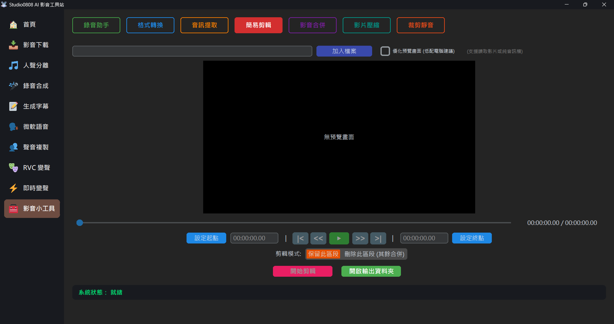

簡易剪輯 (Simple Trim) 是專為「不需重新編碼的快速切割」設計。無須像傳統影音軟體層層等待重新輸出，可以直接根據您標記的起點與終點，秒速「抽」出您要的影片段落。
💡 剪輯模式切換：您也可以選擇「刪除此區段」模式。系統會自動刪除指定的區段，並將前後剩餘的影片無縫合併！
💡 提示：切割後的獨立片段會放在 Outputs/Tools 資料夾內。
A: 因為系統使用的是不重新編碼 (No Re-encoding) 的高速模式，因此剪輯引擎只能從最靠近目標時間點的「Keyframe (關鍵影格)」進行切割。若極度追求毫秒不差，請改用非線性剪輯軟體 (NLE)。
A: 當前簡易剪輯的播放預覽受到 Tkinter UI 極限，建議用於粗略標記使用。太高度的高解析影片可能會在拖拉時間軸時發生些許卡頓。